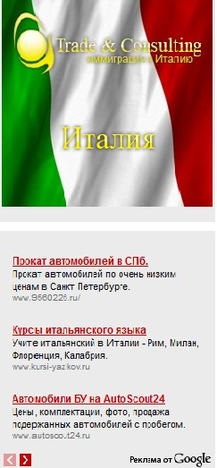
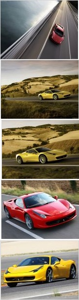
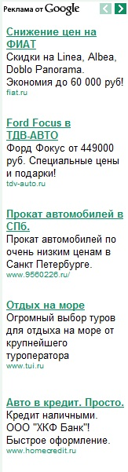
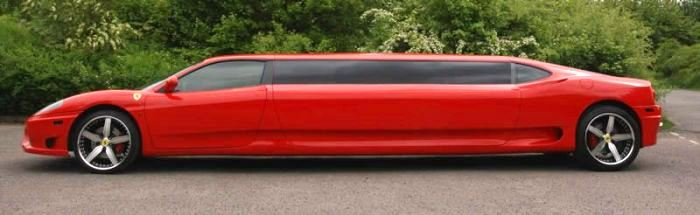
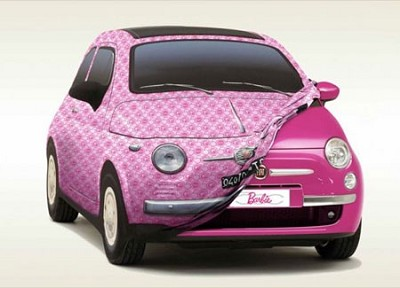
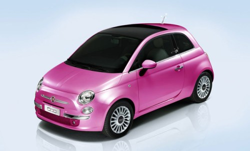
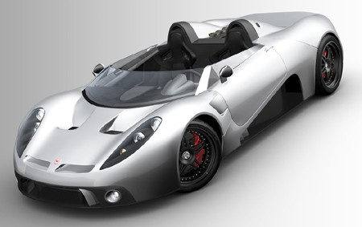

| 

 |
- Создан первый в мире лимузин Ferrari
 Есть такие машины, о которых говорят еще задолго до их выпуска.
К таким автомобилям можно смело отнести результат просто невероятного тюнинга одной из самых удачных
моделей Ferrari - первый в мире лимузин этой итальянской марки. Совсем скоро ловкие британцы представят
свою уникальную разработку, и тогда мир увидит, насколько хорош может быть лимузин Ferrari, появления
которого все так ждали.
Этот лимузин - скорее эксперимент, нежели попытка наладить производство "свадебной кареты" от Ferrari.
Британский энтузиаст Ден Коули, в чьем владении находится самый длинный в Европе Hummer Terminator на десяти
колесах, вместе с Крисом Райтом, экспертом из McLaren, приобрели Ferrari 360 Modena и превратили его в
6-метровый лимузин, начав с того, что распилили спорткар на две части.
Новинка будет представлена в Великобритании на European Limousine and Chauffeur Show уже в этом месяце.
Восьмиместный лимузин работает на 3,6-литровом двигателе V8 и, несмотря на свои размеры, до "сотки" разгоняется
всего за 6 секунд. Между распиленными передней и задней частями бывшего 360 Modena вставлен углеволоконный корпус.
Упорные труды по волшебному превращению, продолжавшиеся в течение 8 месяцев, дали хорошие плоды:
лимузин вошел в историю, а именно в Книгу рекордов Гиннесса, как самый быстрый и самый длинный автомобиль Ferrari в мире. Его максимальная скорость - 274 км/ч.
Внутри машины находятся 10-дюймовый монитор, на который передаются изображения,
пойманные расположенными с внешней стороны лимузина камерами, звуковая система с шестью динамиками и DVD-система.
Предварительная цена на уникальный автомобиль составляет 400 000 долларов, что не так уж и много для исторического
экземпляра.
- Fiat собирается сохранить все заводы Opel в Германии
В ходе переговоров в Берлине о дальнейшей судьбе компании Opel с участием главы итальянского
концерна Fiat никаких соглашений заключено не было. Fiat по-прежнему планирует поддерживать производство на всех
заводах Opel, сообщает dw-world.
Напомним, итальянский автопроизводитель Fiat может приобрести долю в германской Adam Opel GmbH, которую
контролирует General Motors. Обсуждалась возможность покупки 20% американского автопроизводителя.
Все это происходит для того, чтобы увеличить годовой выпуск машин Opel до 5-6 млн с нынешних 2,2 млн,
чтобы на равных конкурировать с лидерами мировой автоиндустрии. Между тем на Opel претендует также канадский
производитель автокомплектующих Magna.
В декабре прошлого года совет немецкого автомобильного концерна Opel заявил, что ожидает дальнейших сокращений
объемов производства, а также уровня доходов сотрудников компании. Сокращение объемов выпуска может достигнуть 30%. А уровень заработной платы может снизиться на 15%.
Также обсуждалась возможность отмены ночной смены, а также другие меры по сокращению рабочего времени без
материальной компенсации.
Намерения итальянского концерна Fiat приобрести компанию Opel были скептически восприняты многими немецкими
политиками и экономистами, - мол, нужно еще проверить, сможет ли итальянский автопроизводитель выполнить свои
обещания.
Накануне глава Fiat Серджио Маркьонне заявил, что в случае поглощения все четыре завода Opel будут сохранены.
Между тем, на переговорах в Берлине, в ходе которых глава Fiat представил свой план покупки Opel, министр
экономики Германии Цу Гуттенберг настаивал на скорейшем решении дальнейшей судьбы Opel. По его словам, будущее
немецкого подразделения оказавшейся на грани банкротства американской корпорации General Motors станет ясным уже
до конца этого месяца.
Полит.ру
- В Италии создали автомобиль для Барби

В Италии был создан гламурный вариант нового Fiat 500 для самой известной куклы
всех времен – Барби. Теперь каждая девушка, купившая этот автомобиль, сможет почувствовать себя в роли
Перис Хилтон.
Fiat 500 Barbie был разработан Fiat Centro Stile совместно с компанией по производству игрушек Mattel.
Самая известная кукла планеты, отпразднует своё 50-летие 9 марта в Милане, где эта модель автомобиля будет
подарена Барби. Церемония будет проходить на площади у главного Собора в 18-30.
Шоу-кар Fiat 500 для Барби покрасили в глянцевый насыщенно-розовый цвет как внутри, так и снаружи.
Сиденья обтянули материалом Alcantara, который не только считается модным, но и очень приятен на ощупь.
В коврики добавили шелковую нить и блестящую вискозу, зеркальце подсветили светодиодами. Машина для Барби
вся сияет: автомобиль щедро инкрустирован стразами.

- Новейший прототип спортивного автомобиля Scuderia Bizzarrini P538

Любой день, в котором итальянские дизайнеры представляют вниманию широкой публики свой
новый суперавтомобиль – это отличный день. На днях, как раз случился такой день и связан он был с именем
Гиотто Биззарини(Giotto Bizzarrini) – известного «гуру» в мире спортивных авто.
Судьба побросала Гиотто по всем крупнейшим итальянским фирмам – Феррари, Ламборджини, Альфа Ромео и Исо.
Его самыми известными автомобилями в этих автомобильных гигантах были Ferrari 250 GTO и двигатель Lamborghini V12,
последние доработки которого используются и сейчас в моделях Murcielago и Reventon.
Разрабатывал Биззарини и собственную линию автомобилей. Так, оригинальный P538S принимал участия в гонках
Ле Манн в 1966-м и 1967-м годах. Оба раза неудачно, однако дизайн этого автомобиля стал одним из лучших творений
Гиотто. И вот, спустя много лет, было решено реконструировать P538S в новейшем дизайне. В нем можно найти что-то
от всех итальянских конюшен, и все же дизайн автомобиля уникален.
Внутри нового Scuderia Bizzarrini P538 будет находится двигатель Chevrolet LS7 V8. К сожалению, технические
данные автомобиля пока неизвестны, но, конечно, этот спортивный автомобиль не ударит в грязь лицом. Возможно
имя Биззарини в последнее время звучало не так часто на всевозможных автовыставках, но P538 вполне достоин того,
чтобы привлечь к себе внимание.
http://www.novate.ru
| |